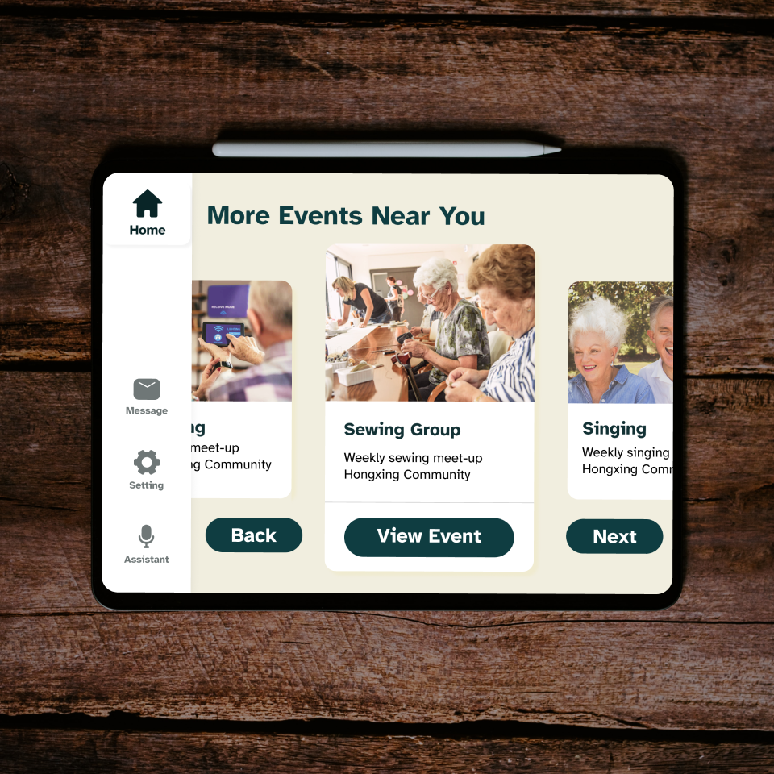

Check out my work here.
CareerScope
A platform for people to see the real career paths and connect with each other.
UX Research / Ideation / Information Architecture / Wireframes / UIUX Design / Interaction Design / Usability Testing
InClub
A user-friendly platform designed for the elderly with disabilities to socialize through events.
UX Research / Ideation / Wireframes / UIUX Design / Interaction Design / Usability Testing / Video Creation